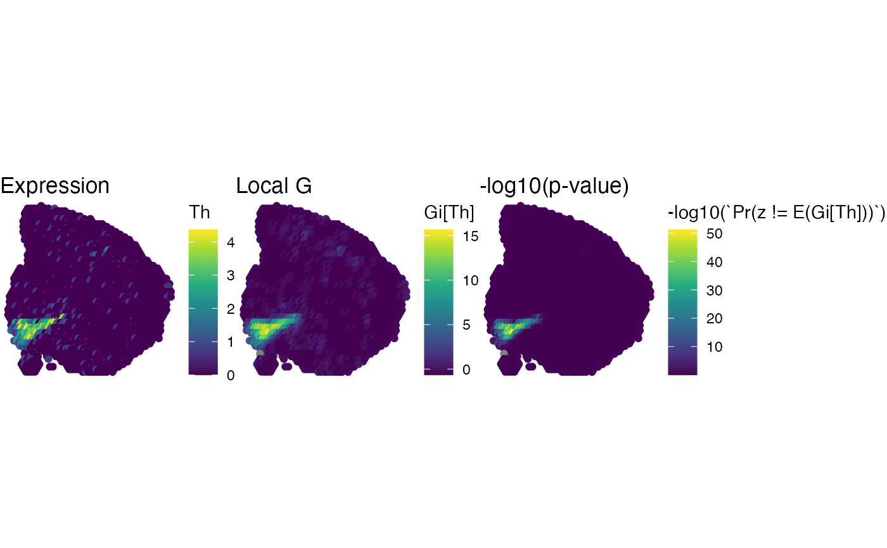

Calculate local G statistic
local-G.RdThis local spatial statistic measures the concentration of high or low values for a given region. This can for example be used to define spatial structures in a tissue section based on the values of selected features. Furthermore, the local G statistic can be used for high/low clustering of data.
NB: This function only calculates G, not G star.
Usage
RunLocalG(object, ...)
# Default S3 method
RunLocalG(
object,
spatnet,
alternative = c("two.sided", "greater", "less"),
return_as_tibble = TRUE,
verbose = TRUE
)
# S3 method for class 'Seurat'
RunLocalG(
object,
features,
alternative = NULL,
store_in_metadata = TRUE,
assay_name = "GiScores",
verbose = TRUE,
...
)Arguments
- object
An object
- ...
Parameters passed to
GetSpatialNetwork- spatnet
A list of tibbles containing spatial networks generated with
GetSpatialNetwork- alternative
A string specifying the alternative hypothesis: "two.sided", "greater" or "less". By default, only the local G scores are returned. If an alternative test is specified, the function will return both local G scores and p-values. Note that p-values are adjusted for multiple hypothesis testing within each feature using "BH" correction. If you want to adjust p-values with a different strategy, you can compute the p-values directly from the local G z-scores.
- return_as_tibble
Logical specifying whether the results should be returned as an object of class
tbl- verbose
Print messages
- features
A character vector of feature names fetchable with
FetchData- store_in_metadata
A logical specifying if the results should be returned in the meta data slot. If set to FALSE, the results will instead be returned as an assay named by
assay_name. If a statistical test is applied, the adjusted p-values will be returned to the meta data slot ifstore_in_metadata = TRUEand in the@miscslot of the assay ifstore_in_metadata = FALSE.- assay_name
Name of the assay if
store_in_metadata=FALSE
default method
Takes a matrix-like object with one feature per column and a list of spatial
networks generated with GetSpatialNetwork and computes the local G
scores and optionally p-values. The G scores are prefixed with "Gi" and p-values
are prefixed with one of "Pr(z <!=", "Pr(z " or "Pr(z <" depending on the chosen
test.
Seurat
Takes a Seurat object as input and returns the local G scores for a selected number of features and optionally p-values. The G scores are prefixed with "Gi" and p-values are prefixed with one of "Pr(z <!=", "Pr(z " or "Pr(z <" depending on the chosen test.
References
Ord, J. K. and Getis, A. 1995 Local spatial autocorrelation statistics: distributional issues and an application. Geographical Analysis, 27, 286–306
Bivand RS, Wong DWS 2018 Comparing implementations of global and local indicators of spatial association. TEST, 27(3), 716–748 doi:10.1007/s11749-018-0599-x
Examples
# \donttest{
library(semla)
library(tibble)
library(dplyr)
library(ggplot2)
library(viridis)
#> Loading required package: viridisLite
# read coordinates
coordfile <- system.file("extdata/mousebrain/spatial",
"tissue_positions_list.csv",
package = "semla")
coords <- read.csv(coordfile, header = FALSE) |>
filter(V2 == 1) |>
select(V1, V6, V5) |>
setNames(nm = c("barcode", "x", "y")) |>
bind_cols(sampleID = 1) |>
as_tibble()
# get spatial network
spatnet <- GetSpatialNetwork(coords)
# Load expression data
feature_matrix <- system.file("extdata/mousebrain",
"filtered_feature_bc_matrix.h5",
package = "semla") |>
Seurat::Read10X_h5()
featureMat <- t(as.matrix(feature_matrix[c("Mgp", "Th", "Nrgn"), ]))
featureMat <- featureMat[coords$barcode, ]
head(featureMat)
#> Mgp Th Nrgn
#> CATACAAAGCCGAACC-1 0 0 19
#> CTGAGCAAGTAACAAG-1 0 0 309
#> GGGTACCCACGGTCCT-1 0 0 108
#> ACGGAATTTAGCAAAT-1 0 0 246
#> GGGCGGTCCTATTGTC-1 0 0 190
#> ATGTTACGAGCAATAC-1 0 0 130
# Calculate G scores
g_scores <- RunLocalG(log1p(featureMat), spatnet)
#> ℹ Setting alternative hypothesis to 'two.sided'
#> → Calculating local G scores for 2559 spots in sample 1
#> ℹ Calculating p-values for local G scores, MH-adjusted within each feature
#> ℹ G scores will be named Gi[Ftr] and adjusted p-values will be named Pr(z != E(Gi[Ftr]))
head(g_scores)
#> # A tibble: 6 × 7
#> barcode `Gi[Mgp]` `Pr(z != E(Gi[Mgp]))` `Gi[Th]` `Pr(z != E(Gi[Th]))`
#> <chr> <dbl> <dbl> <dbl> <dbl>
#> 1 CATACAAAGCCGAAC… -0.893 0.757 -0.377 0.894
#> 2 CTGAGCAAGTAACAA… -0.711 0.757 -0.533 0.812
#> 3 GGGTACCCACGGTCC… -1.09 0.608 -0.462 0.856
#> 4 ACGGAATTTAGCAAA… -0.645 0.757 -0.654 0.759
#> 5 GGGCGGTCCTATTGT… -1.26 0.608 -0.533 0.812
#> 6 ATGTTACGAGCAATA… -1.10 0.608 -0.654 0.759
#> # ℹ 2 more variables: `Gi[Nrgn]` <dbl>, `Pr(z != E(Gi[Nrgn]))` <dbl>
# Bind results with coords for plotting
gg <- coords |>
bind_cols(log1p(featureMat)) |>
left_join(y = g_scores, by = "barcode")
# Plot some results
p1 <- ggplot(gg, aes(x, y, color = Th)) + ggtitle("Expression")
p2 <- ggplot(gg, aes(x, y, color = `Gi[Th]`)) + ggtitle("Local G")
p3 <- ggplot(gg, aes(x, y, color = -log10(`Pr(z != E(Gi[Th]))`))) + ggtitle("-log10(p-value)")
p <- p1 + p2 + p3 &
geom_point() &
theme_void() &
scale_y_reverse() &
coord_fixed() &
scale_colour_gradientn(colours = viridis(n = 9))
p

# }
library(semla)
library(dplyr)
# Load Seurat object with mouse bain data
se_mbrain <- readRDS(system.file("extdata/mousebrain", "se_mbrain", package = "semla"))
se_mbrain <- se_mbrain |>
ScaleData(verbose = FALSE) |>
FindVariableFeatures(verbose = FALSE) |>
RunPCA(verbose = FALSE)
# Calculate G scores
se_mbrain <- RunLocalG(se_mbrain, features = c("Th", "Mgp"), alternative = "greater")
#>
#> ── Calculating local G ──
#>
#> ℹ Got 2 feature(s)
#> ℹ Setting alternative hypothesis to 'greater'
#> → Calculating local G scores for 2559 spots in sample 1
#> ℹ Calculating p-values for local G scores, MH-adjusted within each feature
#> ℹ G scores will be named Gi[Ftr] and adjusted p-values will be named Pr(z > E(Gi[Ftr]))
#> ℹ Placing results in 'Seurat' object meta.data slot
#> ✔ Returning results
# Plot G scores
MapFeatures(se_mbrain, features = "Gi[Th]")
 # high/low clustering
se_mbrain$cluster <- se_mbrain[[]] |>
mutate(cluster = case_when(
`Pr(z > E(Gi[Th]))` > 0.05 ~ "Not Significant",
`Pr(z > E(Gi[Th]))` <= 0.05 & `Gi[Th]` > 0 ~ "High"
)) |> pull(cluster)
MapLabels(se_mbrain, column_name = "cluster")
# high/low clustering
se_mbrain$cluster <- se_mbrain[[]] |>
mutate(cluster = case_when(
`Pr(z > E(Gi[Th]))` > 0.05 ~ "Not Significant",
`Pr(z > E(Gi[Th]))` <= 0.05 & `Gi[Th]` > 0 ~ "High"
)) |> pull(cluster)
MapLabels(se_mbrain, column_name = "cluster")